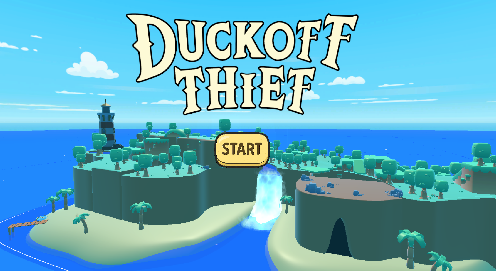
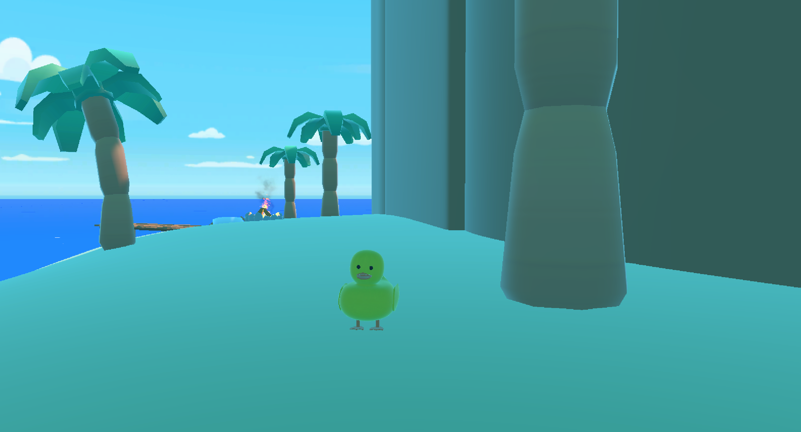

Duck Off, Thief! ist ein 3D-Adventure-Spiel, das im Rahmen eines Gruppenprojekts mit Unity entwickelt wurde. Die Aufgabe der Spieler*innen ist es, einer verlorenen Ente dabei zu helfen, ihren Weg zurück in die Badewanne zu finden. Dabei erkundet man verschiedene Umgebungen, löst kleine Herausforderungen und folgt einer humorvollen Geschichte. Meine Hauptaufgabe im Projekt lag in der Entwicklung der Story sowie der Gestaltung des Spielablaufs.

Play the Game on itch.io